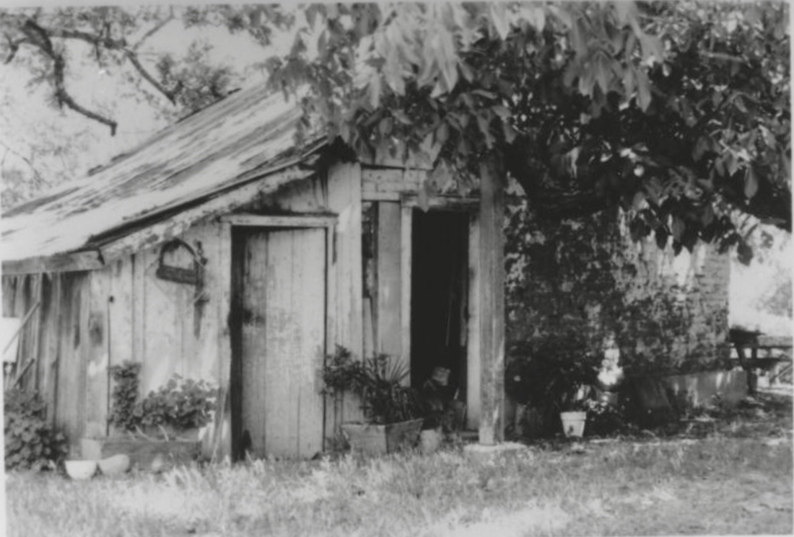
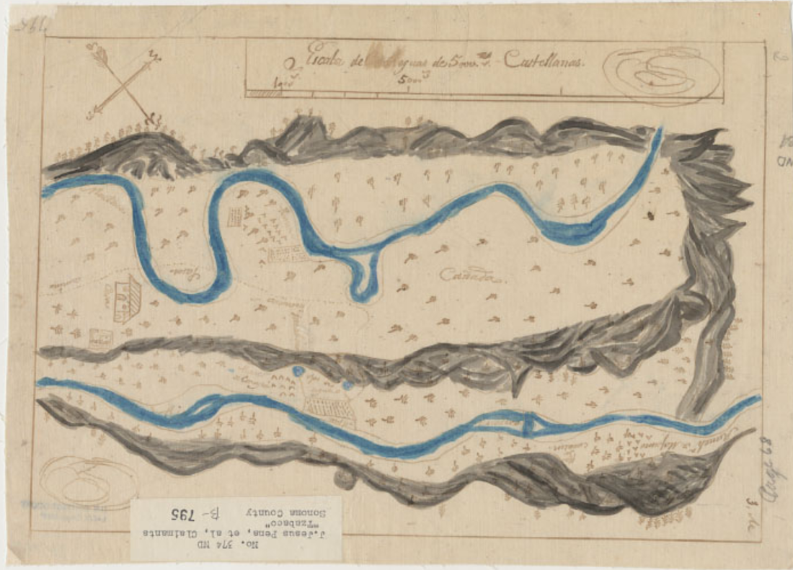
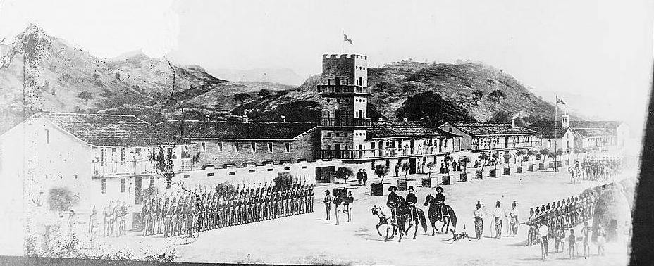
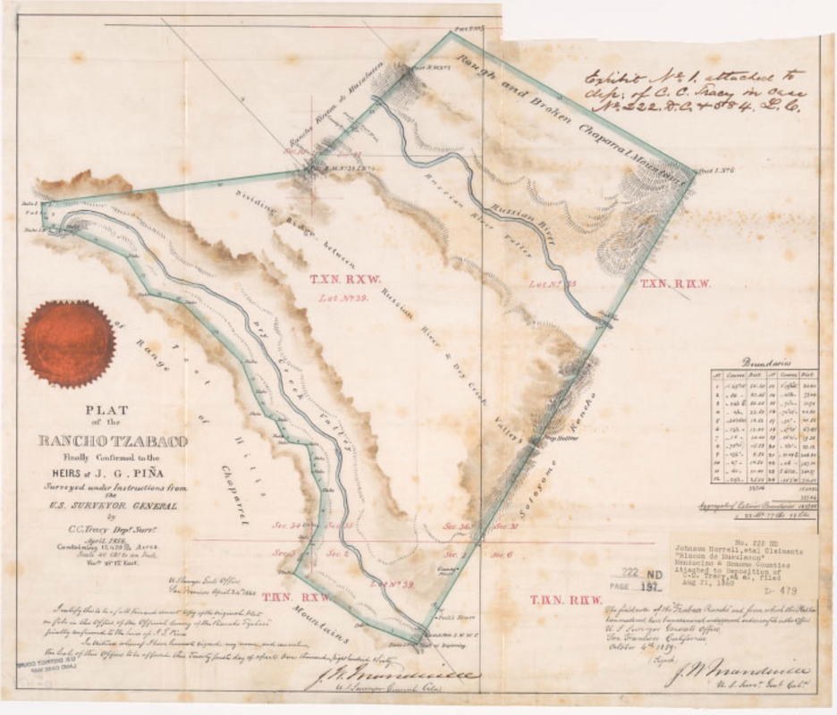

The Piñas of Rancho Tzabaco
(Dry Creek Valley)
© 2020 Hannah Clayborn All Rights Reserved
|
In 1843 a teenager became the legal owner of 17,000 acres of prime land in what is now Dry Creek Valley. José German Piña scouted out that land, and had a residence and the rudiments of a rancho by the age of 15. According to one important source, he was only 14 years old when he officially became the Don of Dry Creek Valley, known then as the Valley of Tzabaca.(1)
The misspelling of José de Jesus German Antonio Piña's name in two important historical sources for early California history left the accomplishments of this precocious early California rancher in the dim dustbin of history until 1985.(2) Even with his identity established, the story of the Piña family of Dry Creek must be pieced together from tiny fragments of historical information added to the scraps in seminal historical works. Early California historians, like the American settlers and squatters who flooded the Dry Creek Valley in the 1850s, did their best to ignore and dispossess this early Mexican landowning family. They were surprisingly successful on both counts. A Human Wall to Block the Russians José German Piña was not alone in his project to establish a cattle ranch on the frontier. He had his family and family connections to help him. But his youth underscores several conditions on the Mexican California frontier. One was the readiness of Mexican officials to grant land to almost any eligible Mexican citizen in order to block the gradual encroachment of the Russians on their northern border. Ever since the Russian-American Company commandeered control of the river they called Slavianka (little Russian girl) by establishing a commercial port at Bodega Bay and a colonial Fort Ross in 1812, Spanish authorities had viewed the Russians with mounting suspicion. The Russians could make use of the Russian River as a natural highway to the interior by surrounding its mouth at present-day Jenner. Until the 1820s the Russians confined themselves primarily to hunting fur seal and sea otter, but as the otter became scarce they searched for more fertile land away from the damp fogs of the coast. The grain and produce would be used to supply their other outposts on the Alaskan coast. Between 1824 and 1836, every Mexican exploratory expedition venturing north of San Rafael and west of Sonoma found alarming evidence of the Russian presence, small bands of Russians searching for farm and ranch sites. At least three Russian farms were established farther inland. Local legend even indicates that the Russians used a valley near the present town of Geyserville to grow wheat.(3) |

Settlement Ross in, 1841, by Ilya Gavrilovich Voznesensky
 General Mariano Guadalupe Vallejo, 1850s. (California State LIbrary) General Mariano Guadalupe Vallejo, 1850s. (California State LIbrary)
Vallejo Is the Junction Box
Although the local Mexican civil authorities and mission padres carried on a profitable unsanctioned trade with the Russians, the Mexican government began a concerted effort to foster settlement in the north, thereby forestalling any further Russian settlement. In 1833 General Mariano Vallejo, commandant of the Sonoma presidio, established another presidio somewhere along the Russian River. It lasted only a month. The next year 120 colonists from Mexico City attempted a settlement, supposedly at the lower end of Russian River Valley, christened Santa Ana y Farias. Internal and external political strife, lack of equipment, and the gentility of the inexperienced settlers who were terrified of the large Indian population, brought an end to this colony in 1835.(4) Thwarted in these first attempts, General Vallejo remained determined. It was my eager desire to colonize all the valleys and hills whose bases were bounded by the Russian River, he declared in his memoir.(5) From 1835 on General Vallejo had almost exclusive control of land grants in the north Bay Area. He was the junction box of a complex and very interdependent network of Californio families. Garnering political influence, prestige, and land often depended upon establishing a familial or personal relationship to him. It was also a policy of the Mexican government to grant lands to soldiers and officers of the Mexican presidios.(6)  Californio lancer on horseback, c. 1847, Myers (Oakland Museum of California) Californio lancer on horseback, c. 1847, Myers (Oakland Museum of California)
Son of a Soldier
José German Piña qualified for land through his father on both counts. He was the second son of soldier Lázaro Piña, born c. 1797 in Mexico City, who came to California in 1819 and played a small but significant role in California history. In 1829 Lázaro rode south as an artillery officer with Joaquin Solis. Solis, an ex-convict turned California ranchero, led a revolt against the regime of Mexican Governor Echeandia. Lázaro and his wife, Maria Placida Villela, were married at Mission San Francisco Dolores March 2, 1823. She was the daughter of a Mexican soldier and an Indian neophyte. Thereafter Lázaro and Maria moved with a growing family between the Alta California presidios. By 1837 Lázaro had gained the rank of corporal and the next year he came under the command of General Mariano Vallejo in Sonoma. Growing close to Vallejo, Piña came to serve as the General's right-hand man and was sometimes put in charge of the fort while Vallejo was absent.(7) Corporal Piña had some very unusual assignments from the General. In 1838 he was dispatched to kill an Indian neophyte at Mission San Rafael who had been accused of the rape and murder of a young Mexican boy and girl. Two years later he served as Vallejo's mouthpiece in a ticklish political situation with the Russians. An American ship, the Lausanne, had landed at the Russian port of Bodega Bay hoping to avoid Mexican anchorage duties. When Piña delivered Vallejo's message to the Russian-American Company manager, Alexander Rotchev, the latter was so insulted that he raised the Russian flag in defiance. Like so many other verbal skirmishes between the Russians and Mexicans, nothing serious came of the affair.(8) In 1840 Vallejo granted Lázaro the 2,800-acre Rancho Agua Caliente, neighboring Vallejo’s own Petaluma grant. Agua Caliente extended from the pueblo of Sonoma north to the wetlands where Kenwood is today. There is some question whether Piña was once again acting as an agent for General Vallejo, helping the General to exceed the governmental limits placed on his personal land grant allocations. Many years later, in 1854, Vallejo claimed that Piña had sold him the land before it had been officially confirmed as a grant. Yet Piña family records indicate that no money ever changed hands for the grant.(9) In the same year that Lázaro received the Agua Caliente grant, 1840, Lázaro's second son, José de Jesus German Antonio (hereafter referred to as German), began scouting expeditions to the Russian River in search of a family rancho. According to historian Bancroft, German would have been 11 years old, but new evidence suggests that he was about 15.(10) A mistaken spelling of the Tzabaco land grant claimant’s name as Pena in the works of historian Hubert Howe Bancroft confused later historians. New research published regarding mission baptismal records indicates Bancroft may also have misreported the birthdates of Lázaro and Maria Placida Pina’s children as well, further confusing later historians, including myself. The source of the confusion is evident below. According to mission baptismal records, by 1840 alfarez (second lieutenant) Piña was the father of six sons and one daughter: Baptismal Name Birth Date Location José Gabriel Francisco, March 18, 1823, Mission San Francisco Dolores José de Jesus German Antonio May 28, 1825, Monterey Presidio José Antonio Florentino October 16, 1827 Monterey Presidio José Antonio de Jesus January 17, 1831 Mission San Francisco Dolores Feliciano Ylarion October 21, 1832 Monterey Presidio Francisco March 9, 1834, Monterey Presidio Luis G., 1835 Monterey Presidio? Maria Clara Asuncion August 11, 1837 Monterey Presidio. (Note: Maria Placida may have had stillborns in 1832 and 1836.) Bancroft, however, gives the names of Lázaro’s oldest sons as José de Jesus and German, born in 1826 and 1829 respectively.(11) According to the later court testimony of Cyrus Alexander, then manager of Captain H.D. Fitch's Sotoyome Rancho, German first tried to settle on some portion of Fitch's 48,800 acres. Alexander informed the teenager that the land had a prior claim, and so Piña moved north, but only far enough to clear the northern border of the Sotoyome rancho. He settled in what is now known as Dry Creek Valley. German's brother joined him in the valley known as Tzabaca in 1841, as did, presumably, the rest of the family. Soon after the brothers built or occupied an adobe dwelling,(12) 
Adobe structure used as a dwelling by José German Piña and family c. 1840. A two-story redwood structure was added to the front at right c. 1856. Photo by Ruby Alta Ferguson, c. 1924. (Healdsburg Museum)
The Mystery of the Piña Adobe
Although most of it was covered with clapboard by D. D. Phillips's shipwright brother-in-law James Terry after it was purchased in 1856, the Piña house is the only adobe structure from the settlement era still standing in northern Sonoma County. Two published histories of Sonoma County have indicated (unfortunately without documentation) that the Piña adobe was originally built as a fortification against the Indians, with sally ports for guns instead of windows. Nearby was another adobe outbuilding used as a storehouse and surrounding both of these a defensive adobe wall.(13) My friend, the late Major Samuel Phillips (1902–1986), always told me that his family’s oral history maintained that the adobe was built by the Mexican military in 1834. According to Major, there were originally two smaller adobe outbuildings, one for food storage and one for ammunition.(14) Such tantalizing clues and convergent sources lead me to speculate that the Piña adobe is actually the site of Vallejo's short-lived presidio on the Russian River in 1833. And it might be the site of the ill-fated Mexican colony known as Santa Ana y Farias, supposedly built somewhere along the lower end of Russian River Valley in 1834. Bancroft admits, All that we know positively of the trip is that he [Governor José Figueroa] started in late August [1834], extended his tour to [Fort] Ross, examined the country, selected a site and having left a small force on the frontier, returned to Monterey the 12th of September. That is also the era of the almost legendary Indian campaigns of Governor Figueroa and General Vallejo against the Satiyomi (or Sotoyome) Indians of northern Sonoma County, led by Chief Succara. Bancroft doubts the accounts of Vallejo and others about these wars that allegedly caused the death of at least six Mexican soldiers and hundreds of Sotoyomes. I am not so certain. Vallejo stated that the settlement Santa Ana y Farias was abandoned the next year (1835) because the colonists refused to venture into a country of hostile Indians. Later historical texts locate Santa Ana y Farias on Mark West Creek on property belonging to Henry Mizer, but the actual evidence for that is scant, based on one oral account that I have not been able to examine, and a much later (1878) journal article published in San Jose. The claim seems to have primarily come from the Mizer family itself.(15) According to anthropologist C. Hart Merriam, Sotoyome was a name used by Le-kah'-te-wut of Petaluma for [an] old rancheria and people at Healdsburg. Published under various spellings by many authors as village and band name, and also used by some (erroneously) as tribal name. They were also nicknamed Guapo (or Wappo) by the Spaniards. Merriam does not connect the Sotoyome to Mark West Creek or the Santa Rosa plain, but places them near Healdsburg. General Vallejo clearly stated that the Sotoyome made their home in both the Alexander and Dry Creek Valleys.(16) According to most accounts settlers in 1834 would have met with friendly tribes in the Mark West Creek area and the Santa Rosa plain: The Cainameros, or the Indians of Cainama, [now referred to as Southern Pomo] in the region toward Santa Rosa, had been for some years friendly, but for their services in returning stolen horses they got themselves into trouble with the Satiyomis, or Sotoyomes, generally known as the Guapos, or braves, who in the spring of 1836, in a sudden attack, killed twenty-two of their number and wounded fifty. Vallejo, on appeal of the chiefs, promised to avenge their wrongs, and started April 1st with fifty soldiers and one hundred Indians besides the Cainamero force. A battle was fought on the 4th of April, and the Guapos, who had taken a strong position in the hills of the Geyser region, were routed and driven back to their ranches, where most of them were killed. The expedition was back at Sonoma on the 7th without having lost a man, killed or wounded. On June 7th Vallejo concluded a treaty of peace and alliance with the chiefs of seven tribes—the Indians of Yoloytoy, Guilitoy, Ansatoy, Liguaytoy, Aclu-toy, Chumptoy and the Guapos, who had voluntarily come to Sonoma for that purpose.(17) [Read more about the battles of the Sotoyomis and General Vallejo's troops.] It would have been natural for young Piña to make use of an existing structure in 1840. And it has been established that there was a cannon on the property in the early 1900's. Several two-pound cannon balls have been dug up in the vicinity of the adobe and are now in the Healdsburg Museum collections.  Adobe outbuilding photographed on Phillips Ranch in 1972 (Sonoma County Library)
For the Happiness of My Family
On September 14, 1843, two or three years after he first settled on the land, José German Piña presented a formal written petition for a land grant along with a diseño (descriptive map) to Governor Micheltorena in Monterey. German Piña, probably using the services of a paid scribe, states: …that finding myself with my Father, advanced in years, and engaged in the military service as an artilleryman [his father Lázaro was then about 46 years old], has himself some stock and needing a place for the security of same, I pray Your Excellency, to be pleased to grant me a tract of land of four square leagues [about 17,000 acres] bounded by the land of Don Enrique Fitch; for which purpose I present the accompanying map of the lands petitioned for, known by the name of Tzabaco; Your Excellency, contributing in this manner to the happiness of my large family, which is now without any security for its interests and for its support and welbeing [sic]. With Lázaro serving as the right-hand man of General Vallejo, it is not surprising that the grant was speedily approved only one month later, on October 14,1843.(18) Like most of the soldiers and rancheros in California in that era, the Piña family could neither read nor write. In later years no California historian or family member recorded the story of the Piña family on the Tzabaco. Only fragments of that story can be pieced together from widely scattered sources. |

Diseño del Rancho Tzabaco;
Relief shown pictorially. Oriented with north toward bottom right corner. From: U.S. District Court. California, Northern District. Land case 374 ND, page 68; land case map B-795 (Bancroft Library). Heirs of J.G. Peña [sic], claimants, Pen-and-ink and watercolor.
The Rancho Tzabaco Smallpox Clears the Way
When they first settled in the Valley of Tzabaco the Piña brothers found remnants of several rancherias, or Indian villages. The largest of these was situated at the confluence of the present Piña and Dry Creeks. Aside from the attacks by the Mexican military previously described, only three years previously, in 1838 a devastating small-pox epidemic had raged through the native American population of the North Bay Area. General Vallejo later estimated that as many as 75,000 Indians died in this tragic incident, and we can only guess at the scale of mortality among the populous Russian River tribelets. Julio Carrillo, a member of a prominent Mexican family on the Santa Rosa plain, and Josefa Carrillo de Fitch’s brother, later stated that death came on such a scale to the Indians that the survivors were unable to bury their dead. This epidemic actually cleared the way for the settlement that took place in the next two decades.(19) Although General Vallejo stated that the Sotoyome made their home in both the Alexander and Dry Creek Valleys, as previously described, later ethnographers found that the Dry Creek area was a center for the Mihilakawna, a Southern Pomo-speaking tribelet, that may have had a population of as many as 500 in 1840.(20) It is possible that the Pomo claimed, or reclaimed, land previously held by the Sotoyomes, a Wappo group, who had been slain by the hundreds by Vallejo's troops in the mid 1830s. The Piña family apparently displaced one of the main Pomo village sites in the Dry Creek Valley.(21) Although all of the early ranchos used the Indians as a form of very cheap labor, those Indians working on the ranchos were also less likely to be kidnapped by the Mexican military or be forced onto distant reservations. By 1843 the Tzabaco rancho, as shown on the diseño that accompanied Piña's formal petition for land, consisted of an adobe dwelling in the present Dry Creek Valley and an adobe corral. With the help of Indian laborers the family had planted orchards and siembra or grain fields in the vicinity. The Piñas also established milpas or cornfields on the west side of the Russian River, near the present town of Geyserville. According to later testimony given to the Land Commission in the 1850's, the Piña family built another adobe structure at the Geyserville site in about 1843, and had vineyards, orchards, and a horse corral on the west and east sides of Russian River. The Indian workers and hired vaqueros lived in dwellings and cabins nearby.(22) Read More about the Epidemics of Alta California 1828--1839. Pomo
The name pomo derives from a conflation of the Pomo words [pʰoːmoː] and [pʰoʔmaʔ].[1] It originally meant "those who live at red earth hole" and was once the name of a village in southern Potter Valley near the present-day community of Pomo.[2] It may have referred to local deposits of the red mineral magnesite, used for red beads, or to the reddish earth and clay, such as hematite, mined in the area.[3] In the Northern Pomo dialect, -pomo or -poma was used as a suffix after the names of places, to mean a subgroup of people of the place.[4] By 1877 (possibly beginning with Powers), the use of Pomo had been extended in English to mean the entire people known today as the Pomo.[3] The Pomo had 20 chiefs at the same time. (Wikipedia} 
Revere's Ride through the Tzabaco
Like the Sotoyome Rancho that bordered it on the south, the Tzabaco Rancho was primarily a cattle ranch, run with stock belonging both to German and his father Lázaro. Naval officer Joseph Revere's account of a journey through northern California in 1846, paints a vivid picture of the probable lifestyle of the Piñas of Tzabaco Creek. Revere, the grandson of famed Paul Revere, was astounded at the vast California ranchos, and found romance in the weekly rodeos when wild cattle would be gathered and counted. Neighboring rancheros would attend to pick out their own fierro (brand) and senal (ear mark), and herd their wandering cattle home. Every rancho had a kitchen garden, usually fenced with brush or protected from livestock by a group of Indian huts. Although to his eyes the sun-baked, clay-brick houses of the rancho looked primitive and patriarchal, he was plainly awestruck by the skilled horsemanship of the Indian and Mexican vaqueros. While attending the annual matanzas (roundup and slaughter) on the Sotoyome Rancho, Revere noted the following: …Thus amidst clouds of dust, through which might be caught indistinct glimpses of agitated horns, fierce-rolling eyeballs and elevated tails - an occasional wild-looking, naked Indian vaquero, with his hair and top-knot streaming out, or a Californian vaquero, known by his fluttering serape - the bellowing, rushing herd approached the corral.(23) Revere actually visited the Tzabaco Rancho in 1846. Coming down the mountains from Clear Lake, he first stopped at the rancho of Don Fernando Feliz near the present Hopland. An Indian chief named by the Mexicans Pinole Colorado, for his red skin paint, also joined Revere's party. As they passed a beautiful and celebrated spot by the riverbank, an abandoned Indian village, Colorado informed Revere that all the inhabitants had been killed or carried off into captivity by the Spaniards. …Arriving at the rancho of Piña, and that being the centre of an Indian population, I deemed it necessary to hold another talk. A stormy scene ensued. It appeared that old Colorado had accompanied me thus far to make use of my authority to reinstate his tribe in their rancheria and territory lying in the very centre of Chino Piña's rancho. But as the latter had a grant of the land from the Mexican government, and as I had no jurisdiction in the matter...I of course declined complying with the demands of the chief. At this, Colorado laid all the blame of my refusal to young Chino, and insulted him before my face; whereupon, to avoid bloodshed and establish discipline, I had him taken into custody by one of my men...He did escape, however, by diving under his horse and making off in the bushes.(24) Despite the incident recorded by Revere, relations between the Piña family and the local Indians appear to have been good. German's maternal grandmother was a neophyte, an Indian converted to Catholicism, perhaps from the Ohlone tribe. Later one of Piña's brothers, Francisco (also known as Pancho), took a Makahmo Pomo woman, Juana Cook, as a common-law wife. His brother Antonio appears to have as well. Contemporary Dry Creek Pomo recall that one of the Piña brothers helped some Pomo escape the roundup of local Indians to be taken to the Round Valley Reservation in the 1850s. That may have been done out of kindness, or practicality, or both, as they depended on Indian labor to run the rancho.(25)
Traded Horses to Pull His Hearse
By 1846 Chino Piña (apparently a nickname for German Piña, meaning curly-haired) was, according to mission baptismal records as described above, 21 years old (17 according to Bancroft). He and his brothers and perhaps other relatives, managed the rancho. They and their sister, Clara, now 11 years old, had lost their mother sometime after 1839. By 1844 their father Lázaro had remarried a young girl, Maria Ygnacia de Jesus Pacheco (born 1824, San Francisco Dolores), who was his first wife’s cousin. She bore Natividad del Refugio (born 1844, Mission San Rafael Arcangel), and José de Jesus (born 1846, Mission San Francisco de Solano).(26) Alfarez Lázaro Piña, the patriarch, who served as an artilleryman in the Mexican army as well as Vallejo’s right-hand man, was still very much a soldier. He left California soon after the United States went to War with Mexico. Fighting with Santiana, he was killed at the Battle of Cerro Gordo in Mexico in 1847.(27) In the same year that his father died fighting to hold California for Mexico, José de Jesus German Antonio Piña lay dying at the Mission San Francisco de Solano in Sonoma. Nothing is known about the cause of his death but a very remarkable document, his last will and testament, was recorded and has survived to tell us something about his last earthly concerns. It was written out by the parish padre, Presbitero Prudencia Santillon, and was dated June 17, 1847. Fully one half of the lengthy text of the will is devoted to a statement of the religious beliefs of the 22 year-old (18 according to Bancroft), calling on the whole of the Saints, male and female to aid his soul on its journey to heaven. The fear is almost palpable. The remainder of the text is a detailed accounting of what he owed and to whom, and all who owed him. The list of debtors and debtees includes many of the prominent rancheros in the area including General Mariano Vallejo, Mark West, Juan B. Cooper, and Moses Carson (Kit Carson’s brother, who was managing the Rancho Sotoyome). German named his brother, Jesus, executor. While colts and cattle are meticulously enumerated, only passing mention is made of the 17,000 acres of the Rancho Tzabaco, which was divided equally between his four surviving brothers and one sister. In that era land was cheap. A few years later the rancho was appraised at $1.18 an acre, while one cow was worth $25. In 2016 open land in Sonoma and Napa Counties was valued at $45,000 an acre. At the very end, this young Mexican man thoughtfully provided for the cost of his burial by making a trade for the horses that would be used to pull his hearse.(28) The real estate that the teenage ranchero so casually left to his brothers and sister in 1847 might be worth today something like 765 million dollars. |



Mission San Francisco de Solano in Sonoma c. 1846, as it looked near the time of José German Piña's funeral procession.
HABS survey photo of Sherman drawing, (California Historical Society)
|
Confusion of Names
The confusion over the long and often repetitive names of the Piña brothers, complicated by nicknames, such as Pancho, leaves this author still uncertain of the exact identity and birthdates of German’s surviving brothers. The baptismal list mentioned above does not match the information in Bancroft’s histories. The 1850 California census was either a best guess on the part of the census taker, or other family members had come on the rancho. The baptismal records would indicate that all of the Piña children were born in California and should have ranged in age from 27 (José Gabriel Francisco) to 13 (Maria Clara): 1850 California Census (Mendocino County) Name Age in 1850 Birthplace Cayeuse Pania, 30 New Mexico Antonio Pania 25 New Mexico Pancho Pania 18 New Mexico Lewis Pania 16 California John Pania, 15 California Maria Pania 20 California(29) Cayeuse could be a nickname used in the West for a horse or Indian pony, usually spelled Cayuse. Or the census taker could be trying to spell the closest thing to Jesus. José Antonio de Jesus, at that time, was age 21. Antonio could be José Antonio Florentino who would have been almost 23. Lewis is Luis G., who would be about that age. Pancho is often a nickname for Francisco, who would have been 16, according to baptismal records. This Maria would have to be Lázaro’s young widow, then about 25 years old. The 1852 census is even less helpful, listing only Cayuse Pinena, age 23(30) Despite the confusion over names and birthdates that has confounded historians for the last two centuries or so, research continues, and it is known that at least four young Piña rancheros remained on the Tzabaco at the time of these censuses. They are referred to in court cases as Jesus, Antonio, Francisco (Pancho), and Luis. At least two of them had common-law wives. Debt and Disdain As tragic as the deaths of Lázaro and German were for the Piña family, it was only the beginning of their troubles on the Tzabaco. From the day that California became a U.S. possession the Piñas, and all Californios, would be at a crushing disadvantage. Over the course of the next decade they would be herded through the arcane process of Land Commission hearings, followed by the inevitable and seemingly interminable court appeals to authenticate ownership of their land. They would be forced to defend their vast acreage against often angry, jealous, and desperate American squatters, or perhaps worse, greedy and unscrupulous lawyers and land speculators. Even the landowning Californios who had the luxury of a formal education would suffer under the alien legal system and prejudices; much more so the illiterate and naive young men who inherited the Tzabaco Rancho. Only a handful of these families managed to retain any portion of their land. Most had to borrow money at usurious interest rates to pay the new American land taxes and attorney fees. They often ended by forfeiting the land they borrowed for, and any careful examination of most court proceedings would lead one to think that this was precisely what the court intended. From 1850 onward, the Piña family fell into increasing debt. Both the late Lázaro's estate and Jesus's portion of German's estate were sold at public auction in 1850.(31) Led by Elisha Ely in 1851, American squatters began to settle on the easternmost portion of the grant, fertile bottomland near the present town of Geyserville. Although the prices for cattle and farm produce during this era shot up because of the flood of hungry miners, the Piñas may not have fared so well as some other ranchers, like their neighbor, Cyrus Alexander. Their inability to speak English may have meant that their business dealings with the Americans were less shrewd than Alexander's. Alexander was generally happy to have his countrymen as neighbors. Having lost a brother and with a father who gave his life for Mexico, the Piñas’ feelings towards the newcomers could not have been as warm. Alexander could quickly repudiate his long-time cooperation with the Mexican government. The Piñas could not. They were young, inexperienced, probably embittered Californios, now increasingly isolated by a growing circle of hostile intruders.(32) 
José Ramon Carrillo (1821–1864), from the neighboring Rancho Cabeza de Santa Rosa, and one of his Pomo workers as drawn by Frank Marryat in 1852. Mountains and Molehills: Recollection of a Burnt Journal, 1855, p. 90. Ramon would also be shot in the back, in 1864, near Rancho Cucamonga in an unsolved murder case.
A Spanish Horseman Is Murdered
The squatters seemed to ignore the Piña family as best they could, and there is no evidence that the Piñas ever attempted to remove them from the Tzabaco. One of the early squatters, Susan Laymance, later recounted to a reporter that soon after her family came to Dry Creek Valley a smallpox epidemic broke out. The disease killed one of her children on February 8, 1853, and afflicted three others: …A few days later three Spanish horsemen stopped at the door. Mrs. Laymance thought their errand was not a friendly one as they had not extended a very cordial welcome to the new white settlers—-so she asked Francis to sit up in bed so they might see his eyes were swollen shut with smallpox. They decamped 'instantly'.(33) Whether they credited the validity of the Mexican grants or not, it seems odd that the Laymances would fail to identify the purported landowners, or remember their names, for the Spanish horsemen were undoubtedly three of the Piña brothers. In their own culture the brothers would be known and addressed with the honorific Don. Such was the disdain with which the American settlers held these native Californians, that they did not bother to learn the identity of their landlords. These same settlers also appeared unconcerned when one of the Piña family was murdered. In April 1853 at least four California newspapers reported on the shooting death of Antonio Piña. I am assuming this was José Antonio Florentino Piña, born October 16, 1827, at the Monterey Presidio. This would make him 25 years old at his death . According to these accounts, he was shot on Saturday, April 16, and died of his wounds Thursday, April 21, 1853. His assailant was said to be William Frazer, an American squatter on the Tzabaco. No local Sonoma or Mendocino County account of Antonio’s murder has been uncovered. No obituary was published. In fact no history or personal memoir or biography of the early American settlers in our county even mentions the Piñas by name at all. The reports from other urban areas, San Francisco, Sacramento, and Los Angeles, are the only sources yet found. (34) The local and county newspapers would later report extensively on the legal claims of Antonio’s heirs to the 17,000 acres that should have been their inheritance. Daily Alta California, 20 April 1853, 2:1 Squatters and Speculators
At least two of the Piña heirs needed no further persuasion to convince them that they could not hold their land intact. Several months after the murder of their brother, two of the Piña brothers signed over their entire interest in the Tzabaco Rancho to John B. Frisbie, an American lawyer and real-estate speculator who was also acting as their attorney. The stated compensation was $20,000. That deed and all it entailed would not go into effect for five years. Its enactment would herald the opening of large-scale American squatter uprisings in 1858, which comprises another long document on this website.(35) The murder of Antonio Piña may be viewed as an opening salvo in the squatters’ wars, as I found the alleged perpetrator, one William Frasier, a 25 year-old farmer and native of Tennessee, living in Dry Creek Valley in September, 1852. His farm is not far from that of Elisha Ely, who would later become Captain of the squatters.(36) Unfortunately, I lose his trail after he was named in the murder of Antonio Pina less than a year later, Before he died of his wounds, Antonio Piña lingered on long enough to dictate a will, naming General Mariano Vallejo, his father's old commandant and friend, as executor. The General took over executorship of all three Piña estates two months later. How little else the Piñas owned aside from land and livestock is illustrated by the listing of Antonio's worldly possessions at the time of his death in 1853: one trunk, one hat, one rifle, one saddle, one reata (lasso), one bit, and one serape.(37) As the Land Commission's review of the Tzabaco grant proceeded between 1852 and 1855, a heated controversy developed regarding the grant's true eastern boundary. At stake were the rich agricultural lands at the north end of Alexander Valley, bordering the eastern bank of Russian River. The squatters who settled there must have agreed with Cyrus Alexander's first assessment of that valley, the brightest and best spot in the world, for they refused to concede that these flat expanses of rich alluvial soil, a grain farmer's dream, were part of the Piña rancho.(38) And they were not the only ones with designs on the Geyserville lands. One high-ranking official in the U.S. Surveyor General's Office, John Clar, was so certain that he would take over ownership of large portions of the upper Alexander Valley, that he designated the spot now known as Geyserville as "Clarville" on an 1857 map!(39) Greed and Political Influence
The controversy over the Tzabaco Grant boundaries, and the simultaneous squandering and loss of the German Piña estate, is an extremely complicated tale, full of intrigue and uncertainty. That story is detailed in A Promised Land: the Healdsburg Land Wars, a thesis I wrote in 1989. The two figures who emerge most prominently from this disheartening tale of greed and political influence are John B. Frisbie, the American speculator/attorney mentioned previously, and General Mariano Vallejo. I do not believe it coincidental that the former was the son-in-law of the latter. John B. Frisbie eventually gained ownership of a majority of the Tzabaco land, sometimes through complicated transfers. General Mariano Vallejo was the only person among the several prominent Sonoma County citizens, American or Mexican, to testify against the Piña family during the Land Commission hearings on the Tzabaco grant boundaries in 1854. He testified that the contested Geyserville area was not part of the Tzabaco Grant, directly contradicting the sworn statements of prominent Americans Cyrus Alexander, Jasper O'Farrel, Jacob Leese, and John Knight. Astoundingly, he gave this testimony while simultaneously serving as executor of the Piña estates. When General Vallejo resigned as executor in 1855, the combined estate of the Piña family was declared completely insolvent. Piña family heirs charged Vallejo with mismanagement.(40) |

Final Survey of the Tzabaco Rancho by C.C. Tracy, 1858 (Bancroft Library)
|
Honorable Americans
Contrasted with the hundreds of squatters who settled in the Geyserville area and Dry Creek Valley in the 1850's, are Samuel O. Heaton and Duval Drake Phillips. They were some of the only Americans to honor the Tzabaco grant and the rights of the Piña family by legally purchasing land from them. To their credit, these men, who later became prominent ranchers, bought 137 acres, including the original Piña adobe, in partnership in 1856. And, unlike the transfer to John Frisbie, this purchase was made not just on paper, but in hard cash.(41) For many years the surviving Piña family members made repeated court appeals to regain their land and overturn the estate ruling. In 1854, when she was about 17, their little sister, Maria Clara, married William Fitch, the eldest son of Captain Henry Delano Fitch and Josefa Carrillo.(42) With the help of her husband she appealed the estate decree in 1862 and 1891. Luis Piña, youngest and last surviving Piña brother, made a final appeal in 1895. This last appeal, coming as it did almost forty years after the fact, suddenly threw doubt on the ownership of one-fifth of the entire 17,000 acres of the original grant. By 1895 this involved the property of approximately 250 Dry Creek ranchers. The sudden uproar subsided when the courts denied this appeal as they had the previous two. Antonio Piña's illegitimate daughter, Maria Antonia Piña, whose mother was probably from a local tribe, filed a claim to her murdered father's estate in 1862. The courts denied the claim because she was illegitimate. The fact that she is named as his daughter in Antonio’s will did not move the judge, who ruled that her father would have to first declare his paternity in a separate document, before making it affective in his will. At the age of 15 she received permission from her guardian, William Fitch, to marry Jose Ortiz in Napa on November 9, 1865.(43) 
From Historical Atlas Map of Sonoma County, Thos. H. Thompson, 1877
Livelihood, Estate, and Security
Not much is known about the fate of the surviving Piñas of the Tzabaco Rancho, the relatives, possibly even descendants, of the original 18 year-old (or, by Bancroft’s count, 14 year-old) grantee named José de Jesus German Antonio Piña. By 1860 only Francisco Piña lived in the Dry Creek Valley, but he owned no land. Luis Piña, youngest of the brothers married Beatrice Cecilia Feliz, whose father owned the large Senal Rancho near Hopland. Their daughter, Josephine Grace Piña, married Peter Isham McCain, whose descendants now live in Visalia. The Piñas never wrote their own story. No one ever wrote it down for them. By the time the major California and Sonoma County histories were being written in the 1870s, almost everyone in the area had forgotten, or neglected to mention, the Piñas of the Tzabaco Rancho. The works of Hubert Howe Bancroft in the 1880's, a major source for almost all later California historians, supplied the final inadvertent indignity by once again misspelling the teenage ranchero's name. Thus even his identity was lost to history until 1985. The four square leagues of land granted in 1843, 17,000 acres that were meant to be the livelihood, estate, and security of the Piña family of California for generations to come, in reality lasted less than fifteen years. Afterword Endnotes
1. The family name Piña is misspelled Pena in many historical accounts. The birth date of the grantee is 1829, as recorded in Bancroft, History of California, vol. IV, pioneer index, pp. 772, 780 (Pena, José German; Piña, German). New information on baptismal records and full names can be found in Dickerson, Brent C., With my Own Eyes: Five Memoirs of Old California; Index Lázaro Piña, iUniverse, 2018. The latter source sets German’s birthdate as May 28, 1825. 2. Bancroft, History of California, vol. IV, Pioneer Register and Index, p. 772. Hoffman, Report of the Land Cases, vol 1, appendix, p. 41 . 3. The Russian farm sites were in the Willow Creek area near the bridge that spans Highway 1, in the upper Salmon Creek Valley, and between the present towns of Occidental and Graton. Ferguson, Historical Development of the Russian River Valley, 14, 15, 37, footnote: 53-54. Watrous and Tomlin, Outpost of an Empire, 9, 17. 4. Streets and lots were even surveyed and staked out for this settlement. Ferguson, Historical Development of the Russian River Valley, 28, 29, 39, 40, 44, 46. 5. Ferguson, Historical Development of the Russian River Valley, 42, quoting from Vallejo's Historia. Lothrop translation, 163-165 . 6. Ferguson, Historical Development of the Russian River Valley, 45-47, 61. Clayborn, A Promised Land, 17-19. 7. Bancroft, History of California, vol. III, 76, 78. Dickerson, With my Own Eyes: Five Memoirs of Old California; Index Lázaro Piña. 8. Ibid., vol. III, 193; vol. IV 172. 9. Hoffman, Report of the Land Cases, vol. 1 appendix, 100. Espediente #229 (Piña, Lázaro grantee), 1840. Piña family records and genealogy, McCain, Emily B., Visalia, CA, 1985. (at the Healdsburg Museum). Dickerson, With my Own Eyes: Five Memoirs of Old California; Index Lázaro Piña. 10. Piña family records, (see above). Bancroft, History of California, vol. IV, pioneer register and index, 780. Dickerson, With my Own Eyes: Five Memoirs of Old California; Index Lázaro Piña. 11. Dickerson, With my Own Eyes: Five Memoirs of Old California; Index Lázaro Piña. In contrast, Bancroft, History of California, vol IV, pioneer index, p. 780 lists children of Lázaro Piña and Maria Placida Villela: José de Jesus, b. in Mont. ’26, German ’29, Ant. A. at S.F. ’31, Feliciano at Mont. ’32, Francisco ’33, Luis G. ’35. 12. Land Claims Commission Hearings; Tzabaco Rancho, 1854 testimony of Cyrus Alexander, Jesus Piña (Bancroft Library). 13. Tuomey, History of Sonoma County,, 424, illustration 395.. Finley, History of Sonoma County, 92; 223. 14. Phillips, Major S. "Dry Creek Memories" in Russian River Recorder, issue 30, summer 1985 15. Bancroft, History of California, vol. III 236-237, 256, 360, 721; footnotes 30 and 31 16. Ethnogeographic and Ethnosynonymic Data from Central California Tribes, No. 2, C. Hart Merriam; edited by Robert F. Heizer; Archaeological Research Facility Department of Anthropology University of California Berkeley, 1977. Sotoyome. Light on the Meaning of the Indian Word, Healdsburg Tribune, Enterprise and Scimitar, Volume XVIII, Number 27, 27 September 1906. 17. Memorial And Biographical History Of Northern California Spanish Colonization File contributed for use in USGenWeb Archives by: Joy Fisher [email protected] November 28, 2005. 18. Espediente #312, Pena, German, (California State Archives, Sacramento). 19. Ferguson, Historical Development of the Russian River Valley, 50, 51. Julio Carrillo, Narrativa, MS (Bancroft Library). . 20. Fredrickson, Vera-Mae, Mihilakawna and Makahmo Pomo, People of Lake Sonoma, 2, 11, 25, 54. 21. Revere, Naval Duty in California, 22. Espediente #312 (Pena, German), diseno, 1843. Land Claims Commission Hearings; Tzabaco Rancho, 1858, testimony of Cyrus Alexander, Jesus Piña. 23. Revere, Naval Duty in California, 116, 117. 24. Ibid., 116. 25. Fredrickson, Vera-Mae, Mihilakawna and Makahmo Pomo, 54. 26. Probate Files, Sonoma County Clerk's Office; File #16 ( Lázaro Piña). Piña family records. Bancroft, History of California, vol. IV., 780. U.S. Census, 1850, Mendocino County. Dickerson, With my Own Eyes: Five Memoirs of Old California; Index Lázaro Piña. Schwald Family Geology: https://schwaldfamily.org/familygroup.php?familyID=F7095&tree=RodSchwald 27. Piña family records (Healdsburg Musuem). Bancroft, History of California, vol. IV. 780.. 28. Probate Files, Sonoma County Clerk's Office, #70, German Piña, last will and testament. 29. 1850; Census Place: Mendocino, California; Roll: 35; Page: 104B 30. 1852, Census Place: Mendocino, California; Page 18 31. Sonoma County Land Deeds: Jesus Piña to José M. Castro, Book E Deeds, 1 and 3, 12 Jan. 1850; Lázaro Piña to Christian Brunner, Book F, 29, Nov. 1850; Lázaro Piña to Martin E. Cooke, Book F, 77, Dec. 1850. A review of such forced sheriff sales in Sonoma County in this era indicates that the party charging the debt was often the same party who purchased the majority of the property sold at auction. 32. Clayborn, A Promised Land, thesis,Sonoma State University, 1989. pp 34-39. 33. Obituary Susan Laymance, Healdsburg Tribune, 10 Aug. 1910. Death date of infant William Laymance: Munro-Fraser, History of Sonoma County, 509. 34. "Violent Death", Daily Alta California, 20 April 1853, 2:1. San Francisco Daily Evening Journal, 19 April 1853, also cited in: Paul Gates, California's Embattled Settlers, 109. No record of an indictment for the murder has yet been located in County court records. All but one of the five existing substantial Sonoma County histories misspell José German Piña's name, and none include any biographical information. Sacramento Daily Union, Volume 5, Number 646, 19 April 1853. Los Angeles Star, Volume 2, Number 52, 7 May 1853. Sacramento Daily Union, Volume 6, Number 812, 31 October 1853 35. Sonoma County Land Deeds: Jesus Piña et al, grantees, to John B. Frisbie, Book M Deeds, 354 (Santa Rosa: County Recorder's Office). For more information see: Clayborn, A Promised Land, 41-132. 36. Census 1852, Mendocino County, California, p. 15:14 37. Sonoma County Probate File no. 71 (Antonio Piña), Inventory of the Estate of Antonio Piña, by M.G. Vallejo, 27 May 1853. 38. Alexander, Life and Times, 59. 39. Clar, Quarterdecks and Spanish Grants, 75, 104-107, 116-117, 123-124. Clayborn, A Promised Land, 61-66. 40. Clayborn, A Promised Land, 65-71. 41. Sonoma County Land Deeds, Jesus Piña et al to D.D. Phillips and S.O. Heaton, 1856, Book B Deeds, 555. 42 1860 Census, Mendocino Township, Sonoma County, California; page 7. 43. Sonoma County Probate File no. 71 (Antonio Piña). Healdsburg Tribune, 28 March 1895, 2:2; and 16 May 1895, 4:2. Clayborn, A Promised Land, 70-72. Alleged Fraud in a U.S. Patent. Jose Ortis to Antonio Pena", Sonoma Democrat, Volume 3, Number 33, 31 May 1860. "Jose Ortis to Antonio Pena, Marriage In Napa Nov. 9th," Sacramento Daily Union, Volume 30, Number 4569, 13 November 1865 "Tzabaco Grant. Litigation Over an Old Mexican Grant at Santa Rosa," San Francisco Call, Volume 73, Number 57, 26 January 1893. "The Tzbzco Grant" San Francisco Call, Volume 73, Number 57, 26 January 1893. "The Tzbaco Rancho. Matilda Archambeau and Two Hundred and Twenty other Defendants".. ," Healdsburg Tribune, Enterprise and Scimitar, Volume 13, Number 37, 22 November 1894. "Tzabaco Rancho. Another Chapter Opened in Its History.." Sonoma Democrat, Volume XXXVIII, Number 16, 26 January 1895. "A Sonoma Land Case Ends. Settlers on the Pena Grant Gain a Victory in the Courts," San Francisco Call, Volume 77, Number 108, 28 March 1895. "The Pena Case," Healdsburg Tribune, Enterprise and Scimitar, Volume XV, Number 9, 16 May 1895. "Legal Fight as to who Stall be Administrator Ruled Rather Abruptly," Press Democrat, Volume XXVIII, Number 4, 16 October 1901. 44. Narrative of William Fitch taken on board of steamer M.S. Latham on her voyage from San Francisco to Donahue : ms.S, 1874 Apr. 16, Bancroft Library. Henry Cerruti, Ramblings in California, manuscript, 1874, Bancroft LIbrary. Bancroft: History of California, Blas Piña with Arce’s party ’46,, v. ,106. Marriage to step-daughter of Mark West, Maria Luisa Concepcion, 1849, in Portraits of Early Sonoma County Settlers, Sonoma County Genealogical Society 2016, p.110. Death of Blas Piña: San Francisco Municipal Reports, January 20, 1877, Supposed Suicide of Blas Pina, Sonoma Democrat, Volume XX, Number 14, 27 January 1877. Land transfers, Francisco and Jesus Piña on May 24 and 25, 1858, to Blas Piña (Sonoma County, Book 7 Deeds, 115, 119). |